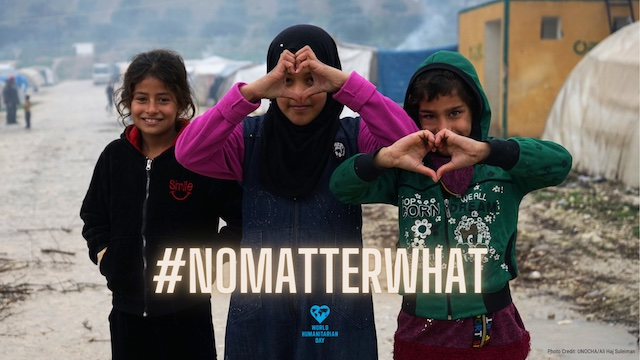

World Humanitarian Day
On 19 August 2003, we lost 22 colleagues in an attack on the United Nations in Baghdad, Iraq. The tragedy profoundly changed the way in which humanitarians operate – from being respected to being targeted – and led to the creation of World Humanitarian Day (WHD).
Today, 20 years on, our work has grown in scale and complexity. We aim to help almost 250 million people – eight times more than in 2003. As our efforts have grown, so too have the challenges we face. From rising geopolitical tensions and the blatant disregard of international humanitarian law, to deliberate attacks and disinformation campaigns, our work is more difficult and dangerous. The values and principles that guide it are under threat.
Amidst these trials, we have grown stronger and are closer to the men, women and children we serve. We have made mistakes and we keep learning. But we have no other purpose than saving and protecting lives and delivering the basics of life - food, water, shelter, education, health, nutrition and protection.
We won’t compromise on our principles of humanity, impartiality, neutrality and independence. This year, for WHD, we will show that we stand shoulder to shoulder with the communities we serve, no matter who, no matter where, and #NoMatterWhat.
Materials for the 2023 WHD campaign will become available here from 7 August 2023.